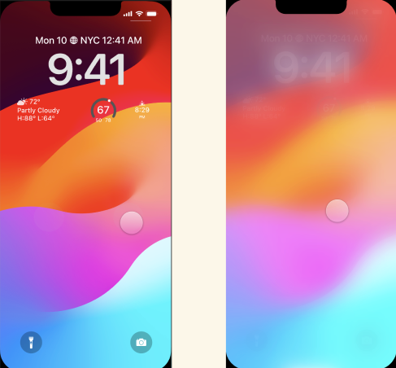

Digital Prototype
Design Statement
An interactive dashboard that visualizes complex data sets for easier understanding and decision making. Focused on clarity and user engagement, this prototype demonstrates dynamic filtering, responsive charts, and accessible interactions.